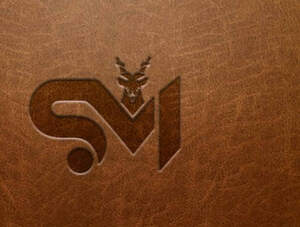

Trade Mark Journal No.2025/024 13 June 2025
UK00004209797 27 May 2025 (14,18,25)

- Class 14
- Leather watch straps; Watch straps made of metal or leather or plastic; Key rings of leather; Leather key rings; Imitation leather key rings; Earrings; Wristlets [jewellery]; Bracelets made of embroidered textile [jewelry]; Bracelets [jewellery]; Bracelets made of embroidered textile [jewellery].
- Class 18
- Leather; Leather cloth; Leather purses; Leather coin purses; Leather handbags; Leather wallets; Leather bags; Leather bags and wallets; Imitation leather bags; Handbags made of leather; Belts (Leather shoulder -); Handbags made of imitations leather; Handbags, purses and wallets; Purses; Clutch purses; Travelling bags made of leather; Straps for coin purses; Imitations of leather; Leather credit card wallets; Card wallets [leatherware]; Leather cases for keys; Purse frames; Belt bags; wallet chains; Leather for shoes; Handbag straps; Leather shoulder belts; Purse frames [handbags]; Clutch handbags; Straps for handbags; Handbags; Shoulder belts [straps] of leather; Leather shoulder straps; Laces (Leather -); Saddle belts; Saddlery of leather; Leather briefcases; Leather and imitations of leather; Leather and imitation leather; Bags made of leather; Bags made of imitation leather; Leather suitcases; Leather pouches; Pouches of leather; Leather luggage straps; Briefcases [leather goods]; Leather straps; Straps (Leather -); Leather shopping bags; Pocket wallets; Wallets (Pocket -); Leather laces; Leather thongs; Leather luggage tags; Straps of leather [saddlery]; Straps (Leather shoulder -); Wallets; Chin straps, of leather; Moleskin [imitation of leather]; Moleskin [imitation leather]; Purses [leatherware]; Briefcases made of leather; Leather leashes; Leashes (Leather -); Adhesive tags of leather for bags; Labels of leather; Leather cases; Leather for harnesses; Leather cord; Pouches, of leather, for packaging; Belt pouches; Leather cords; All-purpose leather straps; Belt bags and hip bags; Hat boxes of leather; Boxes of leather (Hat -); Imitation leather hat boxes; Boxes of leather or leather board; Polyurethane leather; Studs of leather; Synthetic leather; Valves of leather; Leather twist; Harness made from leather; Tanned leather; Leather thread; Thread (Leather -); Bands of leather; Girths of leather; Key-cases of leather and skins; Imitation leather; Leather (Imitation -); Straps made of imitation leather; Sew-on tags of leather for clothing; Leather for furniture; Garment bags for travel made of leather; Vegan leather.
- Class 25
- Leather shoes; Leather pants; Trousers of leather; Leather slippers; Leather clothing; Clothing of leather; Leather (Clothing of -); Leather jackets; Leather dresses; Leather belts [clothing]; Leather coats; Leather garments; Leather waistcoats; Belts made of leather; Leather suits; Suits of leather; Imitation leather dresses; Clothing of imitations of leather; Leather (Clothing of imitations of -); Belts made from imitation leather; Clothing made of leather; Slippers made of leather; Clothing made of imitation leather; Leather headwear; Suede jackets; Motorcyclists' clothing of leather; Dresses; Japanese style sandals of leather; Collars for dresses; Dress shoes; Pinafore dresses; Suits made of leather; Dress pants; Quilted jackets [clothing]; Cocktail dresses; Dresses made from skins; Dress shirts; Dresses for evening wear; Jumper dresses; Tennis dresses; Wedding dresses; Silk clothing; Denim jackets; Maternity dresses; Lace boots; Sheepskin jackets; Fabric belts [clothing]; Belts of textile; Fabric belts; Suspender belts; Tuxedo belts; Waist belts; Belts [clothing]; Belts for clothing; Fur jackets; Padded jackets; Fleece jackets; Blouson jackets; Waterproof jackets; Jacket liners; Sleeveless jackets; Jackets; Men's and women's jackets, coats, trousers, vests; Rainproof jackets; Corduroy trousers; Waterproof trousers; Weatherproof jackets; Windproof jackets; Fur coats and jackets; Jackets [clothing]; Sleeved jackets; Wind-resistant jackets; Bomber jackets; Motorcycle jackets; Camouflage jackets; Snowboard jackets; Ski jackets; Rain jackets; Reversible jackets; Hunting jackets; Fishing jackets; Shell jackets; Sweat jackets; Down jackets; Heavy jackets; Knit jackets; Jackets being sports clothing; Sports jackets; Warm-up jackets; Wind jackets; Jackets (Stuff -) [clothing]; Stuff jackets [clothing]; Riding jackets; Casual jackets; Stuff jackets; Safari jackets; Light-reflecting jackets; Bed jackets; Dinner jackets; Fishermen's jackets; Smoking jackets; Track jackets; Long jackets; Donkey jackets; Polar fleece jackets; Waistcoats [vests]; Parkas; Anoraks [parkas]; Wind resistant jackets; Vests; Fleece vests; Gilets; Wind-resistant vests; Quilted vests; Oilskins [clothing]; Windproof clothing; Corduroy shirts; Blazers; Outerwear; Sweatshirts; Raincoats; Coats of denim; Denim coats; Hoods [clothing]; Gloves [clothing]; Gloves as clothing; Capes (clothing); Windcheaters; Collars [clothing]; Camouflage vests; Waistcoats; Shorts [clothing]; Shirts for suits; Jerseys [clothing]; Sweaters; Chaps (clothing); Jumpsuits; Duffle coats; Kerchiefs [clothing]; Overshirts; Jumpers [sweaters]; Gloves for apparel; Hooded sweatshirts; Down vests; Corduroy pants; Korean outer jackets worn over basic garment [Magoja]; Bottoms [clothing]; Duffel coats; Turtleneck shirts; Wind vests; Visors [clothing]; Rainproof clothing; Hoodies; Trousers; Waterproof pants; Sports vests; Fishing vests; Articles of clothing made of leather; Dress suits; Fancy dress costumes; Men's dress socks; Dress shields; Shields (Dress -); Skirt suits; Suit coats; One-piece suits; Suits; Waterproof suits for motorcyclists; Zoot suits; Shell suits; Gussets for bathing suits [parts of clothing]; Romper suits; Body suits; Men's suits; Trouser straps; Trouser socks; Leggings [trousers]; Denim pants; Vest tops; Shirts; Mock turtleneck shirts; Sweat shirts; Long-sleeved shirts; Short-sleeved shirts; Short-sleeve shirts; Open-necked shirts; Knit shirts; Polo shirts; Collared shirts; Hooded sweat shirts; Camouflage shirts; Denim jeans; Nappy pants [clothing]; Blue jeans; Pique shirts; Jeans; Embroidered clothing; Shirt yokes; Yokes (Shirt -); Woven shirts; Denims [clothing]; Trousers shorts; Pants; Pleated skirts; Culotte skirts; Skirts; Pleated skirts for formal kimonos (hakama); Uppers of woven rattan for Japanese style sandals.
Worldwide products1 LTD